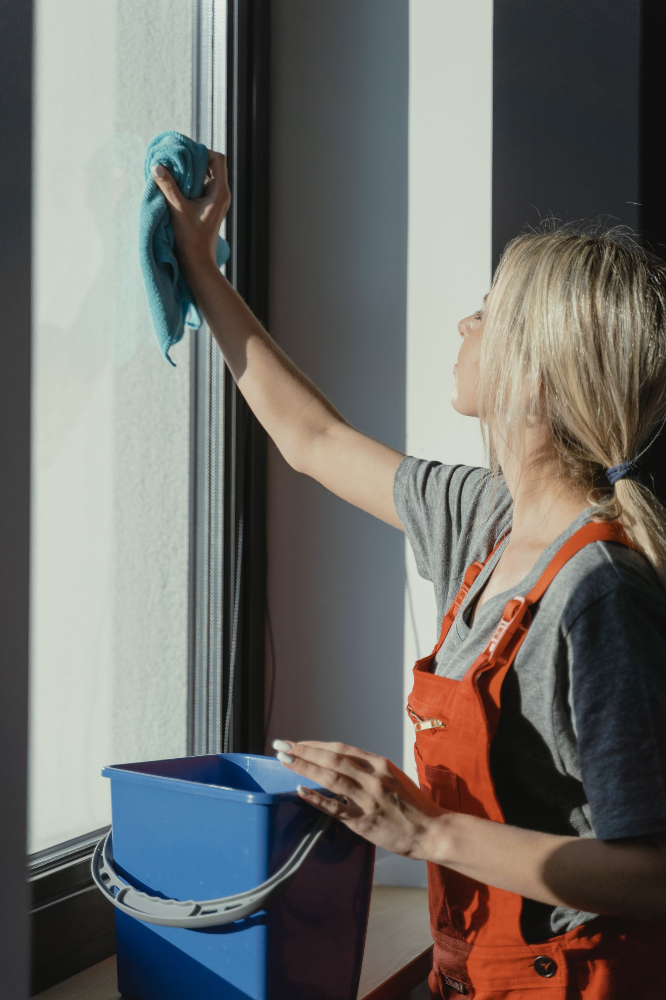
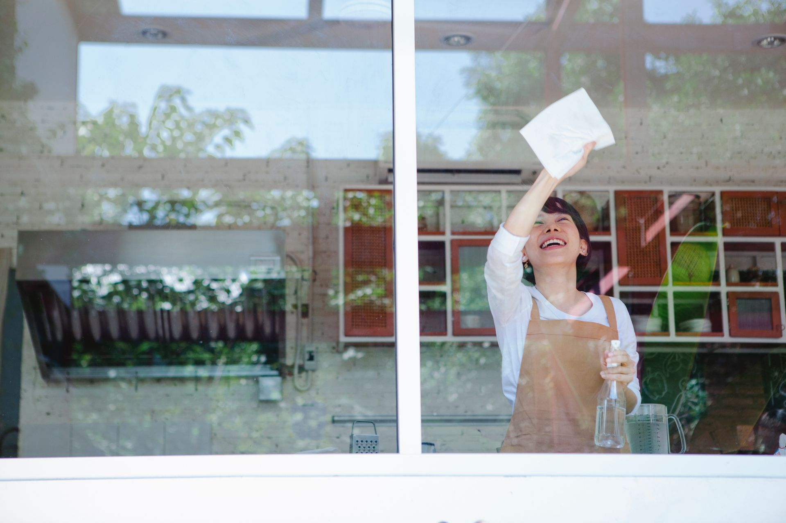
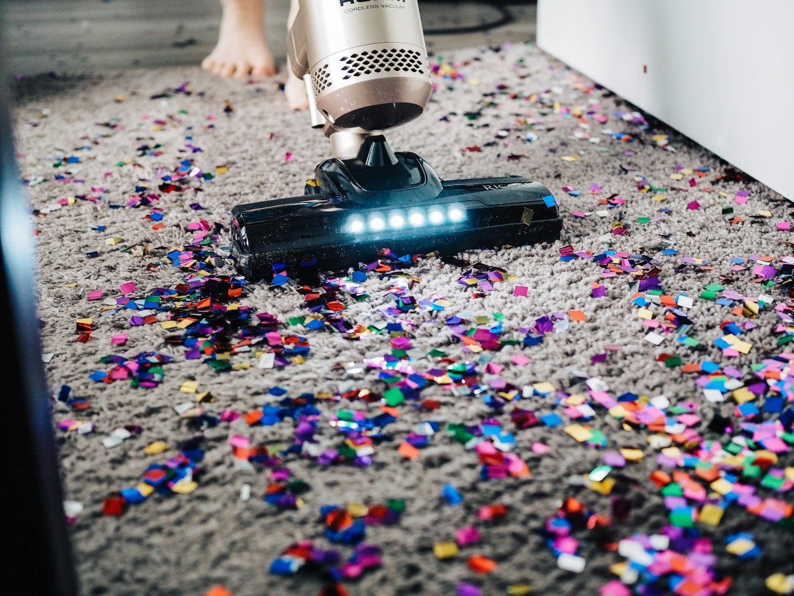
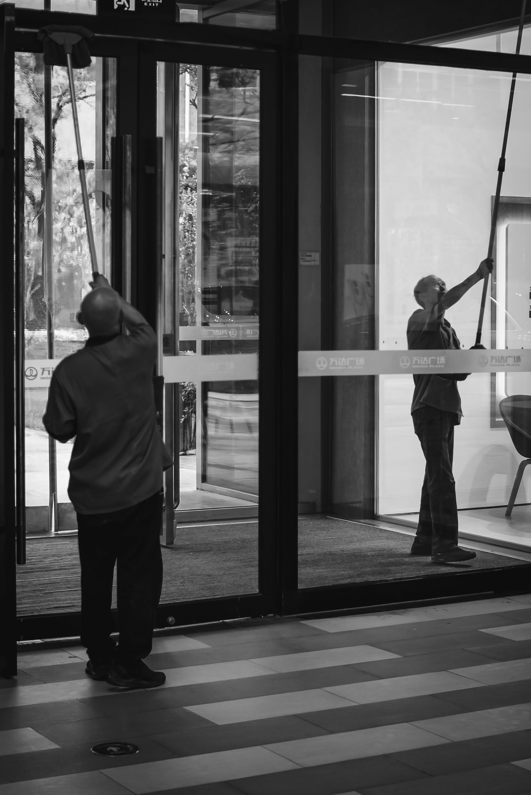

01 — Pour les particuliers
Un intérieur
qui respire.
Un ménage ponctuel ou régulier, adapté à votre logement et à votre quotidien.
Nettoyage professionnel · Lausanne
Un espace propre change tout. Kalary prend soin de vos bureaux, commerces et logements à Lausanne.


01 — Pour les particuliers
Un ménage ponctuel ou régulier, adapté à votre logement et à votre quotidien.

02 — Pour les professionnels
Bureaux, commerces et parties communes entretenus avec attention.
03 — Vitres & grands nettoyages
Parlons de votre besoin à Lausanne et dans les environs.
Parler de mon projetSavoir-faire
Des solutions adaptées à vos espaces et à votre quotidien.

Des espaces de travail et d'accueil entretenus avec soin.
Un ménage ponctuel ou régulier, selon vos besoins.
Entretien des halls, escaliers et parties communes.
Nettoyage de locaux professionnels et remise en état après travaux.
Pour retrouver des surfaces nettes et des espaces frais.
Un logement propre avant l’état des lieux ou après votre emménagement.
Photos d’illustration.
Pourquoi Kalary
Un bon nettoyage commence par comprendre votre espace et ce qui compte pour vous.
Nous échangeons avec vous pour comprendre vos attentes avant de proposer une intervention.
Logement, bureaux ou parties communes : parlons d’une formule qui correspond à votre situation.
Appelez-nous ou décrivez votre besoin sur WhatsApp, simplement et sans détour.
Une équipe à votre écoute
Chaque lieu est différent. Parlons de vos besoins et trouvons ensemble une formule de nettoyage adaptée.
Parlons de votre projetExpliquez-nous le type d’espace et votre besoin.
Nous échangeons avec vous sur une proposition adaptée.
Une intervention organisée selon ce qui a été convenu.
Parlons de votre projet
Quelques détails suffisent pour commencer. Votre demande s’ouvrira dans WhatsApp, prête à être relue et envoyée.
Vous préférez appeler ? +41 77 997 86 63Contact
Le plus simple : appelez-nous ou écrivez-nous sur WhatsApp pour parler de votre besoin.
Lun–Ven · 07:00–17:00
Sam · 08:00–16:00 · Dim fermé